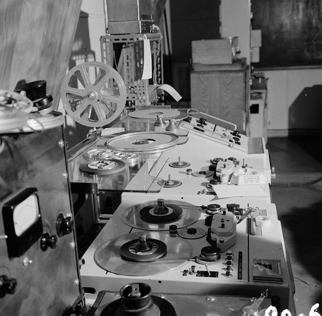
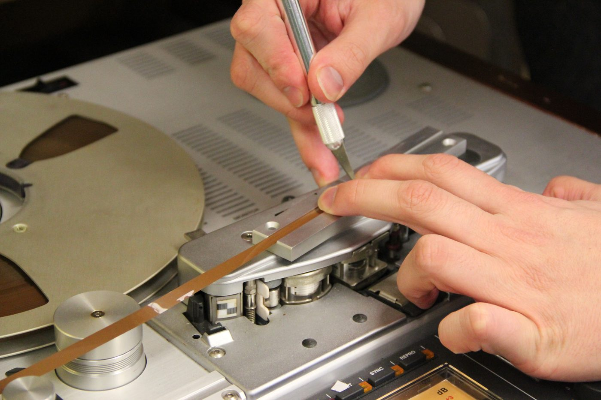
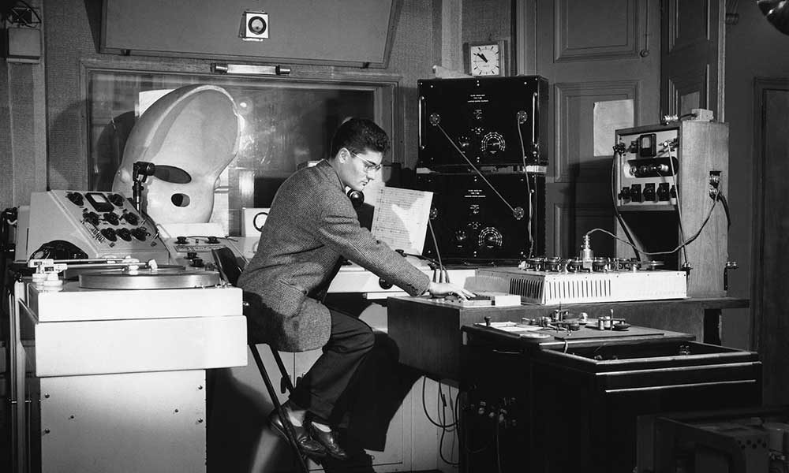

Project 1 asks you to build a piece from existing sound material, to treat sound as something you cut, shape, and arrange, rather than something you perform live or notate on a staff. This is the central idea of musique concrète, a tradition started in Paris in 1948 by Pierre Schaeffer. He recorded everyday sounds (trains, doors, voices, water) and worked with them as raw material, the way a sculptor works with stone.
This week's listening introduces you to that tradition. But before you press play, it's worth knowing something important about the pieces you're about to hear: they were not made on a computer.
The composers who started musique concrète were working decades before digital audio existed. Pierre Schaeffer's Études de bruits (1948), the first works in the genre, were cut directly to acetate disc, since usable magnetic tape recorders weren't yet widely available in France. By the early 1950s tape had taken over, and for the next thirty years, this tradition was a tape tradition.

Photo via The Vinyl Factory, "A guide to Pierre Schaeffer, the godfather of sampling"
Composers built their pieces by physically splicing pieces of magnetic tape with razor blades, looping them, slowing them down or speeding them up, playing them backward. The "edit" wasn't a click in software: it was a cut with a blade, a piece of adhesive splicing tape, and a careful placement on a metal block.

Photo: University of Maryland Digital Collections (Flickr), CC BY-NC-ND 2.0, via Toby Rush, Music Theory 21c
This matters for how you listen. The artifacts you might hear, things like surface noise, slight pitch instability, the audible seam of an edit, are not flaws in the recording. They're the sound of the medium itself, the physical reality of working with magnetic tape and disc. Schaeffer and Henry weren't trying to sound digital and failing. They were working in their actual material, the way a sculptor works in marble rather than aspiring to be a 3D printer.

Photo via Lawrence Casserley, "Guide to Electronic Music Techniques," Electronics & Music Maker, June 1981 (muzines.co.uk)
Digital audio took a long time to arrive in this tradition. Computer-based music synthesis began in research labs as early as the 1950s, but the equipment was expensive and limited. Tape stayed dominant through the 1970s. The first commercial digital samplers arrived around 1979, but they cost as much as a house. Through the 1980s and into the early 1990s, studios began mixing tape and digital workflows. Hard-disk recording gradually became affordable. By the late 1990s, anyone with a personal computer and a little software could do digitally what had previously required a tape studio. Within another decade, working in tape became a deliberate aesthetic choice rather than a default.
Knowing the medium tells you how to listen. The pieces you're about to hear were physical objects: lengths of tape, with cuts in them, played on machines. They sound the way they sound for reasons that include the medium. Hold that in your ears as you listen, and listen with the ears of someone who is about to make a piece in the same tradition. You'll be asked to think about what techniques you hear, what choices the composers made, and what you might try yourself.
The first piece of musique concrète ever made. Built entirely from train sounds. About 3 minutes.
If the video doesn't load, search YouTube for "Schaeffer Étude aux chemins de fer."
Built from the sound of a single door and a single sigh. The full work has 25 numbered movements; the embed below is the complete album playlist. Listen to at least the first 5 minutes (about the first three or four movements). If you find yourself drawn in, keep going. The playlist will play through to the end on its own.
If the playlist doesn't load, search YouTube for "Henry Variations pour une porte et un soupir."
Find one piece made in the last 20 years that you'd describe as continuing the musique concrète tradition: sound-collage, found-sound composition, or sample-based work that treats source material the way Schaeffer and Henry did. A few possible directions to search if you're stuck: Christian Marclay, Matmos, Holly Herndon, Oneohtrix Point Never, Yasunao Tone, or a hip-hop producer whose work is built on samples.
Note what you chose and why: that's part of your response.
Answer all four. Half a page total, concise is fine. Submit on Canvas as a text response.
Use headphones if you can. Listen all the way through at least once before answering. Most musique concrète is not background music, it asks for your attention. If a piece feels strange or boring at first, sit with it. The tradition rewards patient listening.
This is the first of several listening assignments across the semester. The questions follow a consistent pattern: description, analysis, and what you'd try in your own work. Listen, write what you actually hear, and don't worry about being wrong.